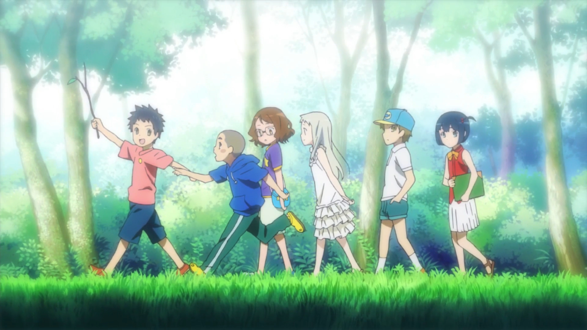

Best Slice of Life Anime
Participate in our poll for the best slice of life anime series!
Share your favorite shows, characters, and standout moments that have
touched your heart. Engage with fellow fans, discover new slice of life gems, and
celebrate the beauty of these relatable and heartwarming narratives. Let's delve
into the enchanting world of slice of life anime together and determine the ultimate
series that captures the essence of everyday life!
#1
K-On!
#2
Toradora
#3
Hyouka
#4
OreGairu
#5

Anohana